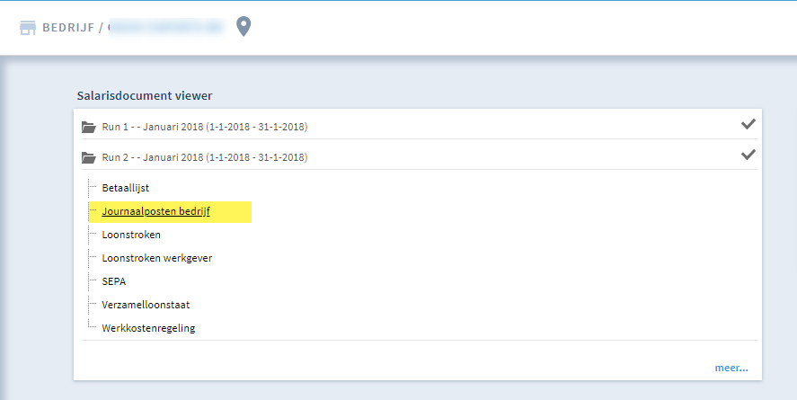
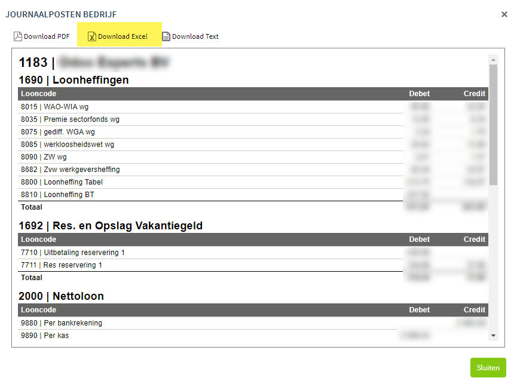
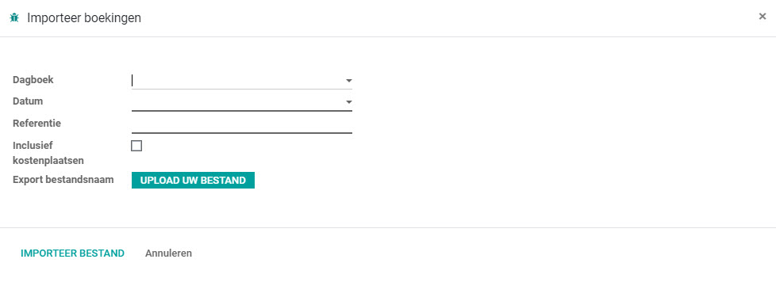

<section class="oe_container">
    <div class="oe_row oe_spaced">
        <h2 class="oe_slogan" style="color:#875A7B;">Importeer het loonjournaal van het loonpakket Nmbrs rechtstreeks in Odoo</h2>
        <p>
          Werkwijze:<br/>
1. Zorg ervoor dat je in Nmbrs de grootboekrekeningen overeenkomstig Odoo hebt ingesteld.<br/>
2. Ga in Nmbrs naar <b>Journaalposten bedrijf</b>

3. Open de journaalpost en klik op download Excel

4. Ga in Odoo naar Controller > Importeer boekingen<br/>
5. Vul de boekdatum in en geef een omschrijving mee, bijvoorbeeld Lonen 01-2018<br/>
6. Selecteer het Excel bestand (het is een .csv bestand) en klik op <b>Importeer bestand:</b>
        </p>
	
    </div>
</section>
